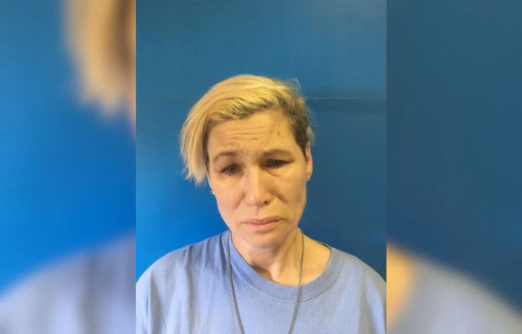
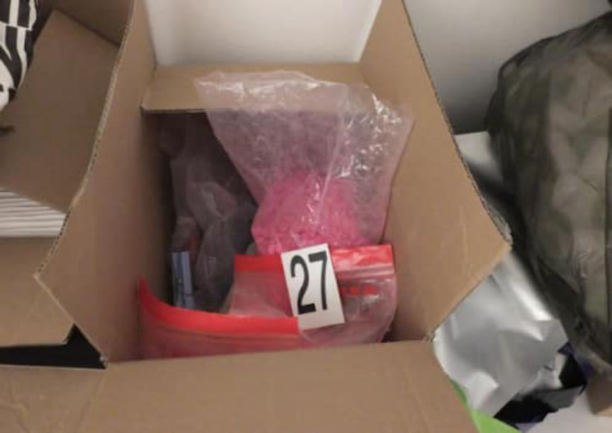
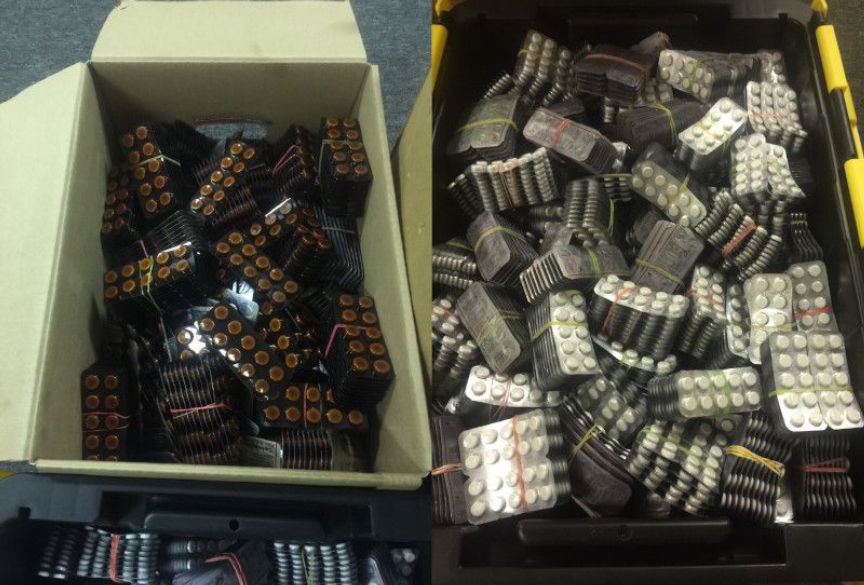
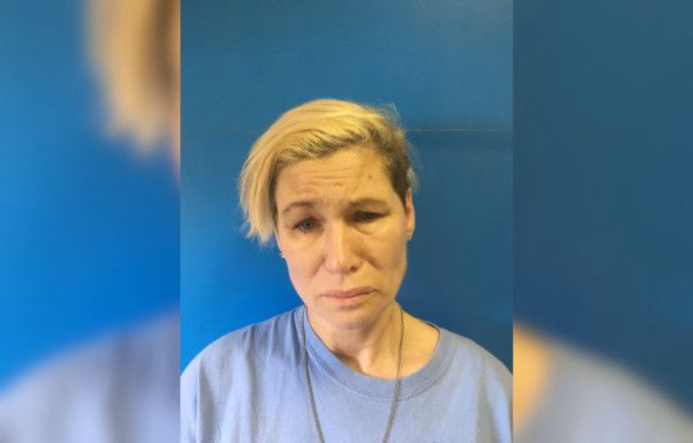
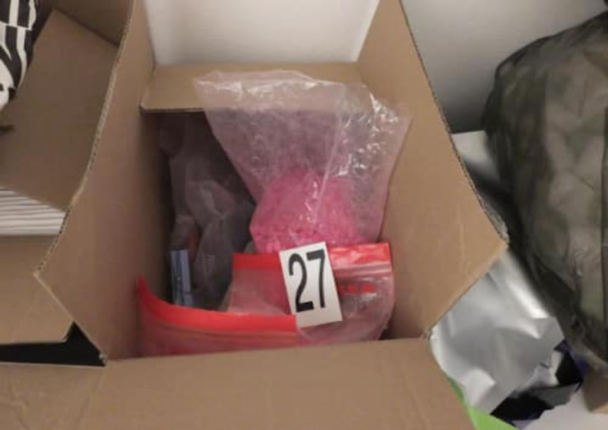
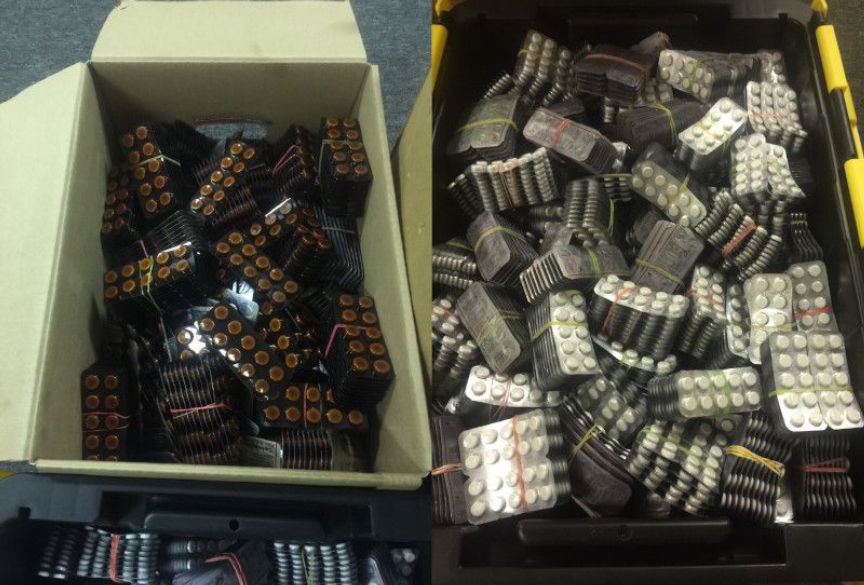

North Carolina Woman Suspected of Selling Pills on the Darkweb
Homeland Security Investigations and the United States Postal Inspection Service are investigating a North Carolina woman for drug crimes likely linked to the darkweb. Investigators seized a package of pills headed addressed to the suspect. After searching the suspect’s house, they found hundreds of USPS packages and thousands of pills.
As a local news outlet reported, Homeland Security Investigations (HSI) in New York intercepted two packages containing “several thousand dosage units” of carisoprodol (also known as Soma). The packages were addressed to Tammy Allison Kelly in Littleton, North Carolina. An agent with HSI and a Postal Inspector with USPIS met with narcotics agents of the Halifax County Sheriff’s Office on September 9 to conduct a controlled delivery at Kelly’s Littleton home.
After conducting the controlled delivery, law enforcement executed a search warrant at Kelly’s house where Kelly had just received the package. During the search agents found another 12,000 “dosage units” of carisoprodol (Soma), more than 1,500 doses of alprazolam (Xanax), almost 90,000 doses of Tramadol, and just under 400 doses of Ambien. Although Kelly could have been selling the drugs locally or using them herself (in massive quantities), other evidence seized by law enforcement suggested otherwise.
In addition to the drugs, the authorities searching the house also found hundreds of USPS packages, assorted shipping supplies, and prepaid Priority Mail postage. Kelly had also prepared packages for recipients in Georgia, Virginia, Florida, Texas, Nebraska, Indiana, Pennsylvania, and New York. Kelly had printed United Postal Service Click-N-Ship Priority Mail Express postage labels for the recipients in the states listed above. The recipients, evidence suggested, likely purchased drugs from Kelly on the darkweb.
Captain A.M. Harris of the Halifax County Sheriff’s Office said that Postal Inspectors are currently trying to find a connection between activity on darkweb markets and Kelly’s alleged drug distribution. Authorities charged Kelly with:
possession with intent to manufacture/sell/deliver schedule IV controlled substance (carisoprodol); possession with intent to manufacture/sell/deliver schedule IV controlled substance (alprazolam); possession with intent to manufacture/sell/deliver schedule IV controlled substance (zolpidem) possession with intent to manufacture/sell/deliver schedule IV controlled substance (tramadol); felony possession of cocaine; and maintaining a vehicle/dwelling for a controlled substance.
The ongoing investigation could result in the filing of additional charges. Kelly is in custody with a $60,000 bond and a court date scheduled for October.
As a local news outlet reported, Homeland Security Investigations (HSI) in New York intercepted two packages containing “several thousand dosage units” of carisoprodol (also known as Soma). The packages were addressed to Tammy Allison Kelly in Littleton, North Carolina. An agent with HSI and a Postal Inspector with USPIS met with narcotics agents of the Halifax County Sheriff’s Office on September 9 to conduct a controlled delivery at Kelly’s Littleton home.
Tammy Allison Kelly Booking Photo | Credit: rrspin
After conducting the controlled delivery, law enforcement executed a search warrant at Kelly’s house where Kelly had just received the package. During the search agents found another 12,000 “dosage units” of carisoprodol (Soma), more than 1,500 doses of alprazolam (Xanax), almost 90,000 doses of Tramadol, and just under 400 doses of Ambien. Although Kelly could have been selling the drugs locally or using them herself (in massive quantities), other evidence seized by law enforcement suggested otherwise.
Boxes of Pills Seized by HSI and USPIS | Credit: rrspin
In addition to the drugs, the authorities searching the house also found hundreds of USPS packages, assorted shipping supplies, and prepaid Priority Mail postage. Kelly had also prepared packages for recipients in Georgia, Virginia, Florida, Texas, Nebraska, Indiana, Pennsylvania, and New York. Kelly had printed United Postal Service Click-N-Ship Priority Mail Express postage labels for the recipients in the states listed above. The recipients, evidence suggested, likely purchased drugs from Kelly on the darkweb.
More Boxes of Pills Seized by HSI and USPIS | Credit: rrspin
Captain A.M. Harris of the Halifax County Sheriff’s Office said that Postal Inspectors are currently trying to find a connection between activity on darkweb markets and Kelly’s alleged drug distribution. Authorities charged Kelly with:
The ongoing investigation could result in the filing of additional charges. Kelly is in custody with a $60,000 bond and a court date scheduled for October.